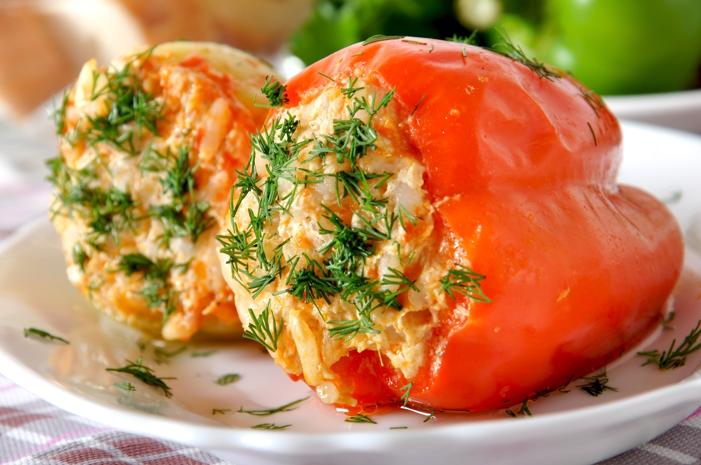

Ardei umpluti de post

- Pregateste ardeii pentru umplut: Taie “capace” fiecarui ardei si curata de seminte partea inferioara, folosind o lingurita.
- Intr-o tigaie incinge uleiul si caleste ceapa taiata cat mai marunt, impreuna cu usturoiul maruntit.
- Cand ceapa devine translucida, adauga ciupercile taiate cubulete si amesteca continuu, pana ce ciupercile isi schimba culoarea integral.
- Adauga peste 2-3 linguri din piureul de rosii si restul ingredientelor: orezul spalat, morcovul dat pe razatoarea mica, patrunjelul tocat marunt, sarea si piperul.
- Umple ardeii cu aceasta compozitie obtinuta si asaza-i intr-o tava termorezistenta.
- Pe langa ei, toarna apa combinata cu restul de sos de rosii, pana la jumatatea inaltimii lor.
- Da tava cu ardei umpluti de post la cuptor pentru 70-80 de minute, la 160 de grade, sau pana cand ardeii sunt rumeniti
- Intoarce-i la jumatatea timpului de coacere si serveste ardeii umpluti de post alaturi de mamaliguta si putin marar presarat deasupra.